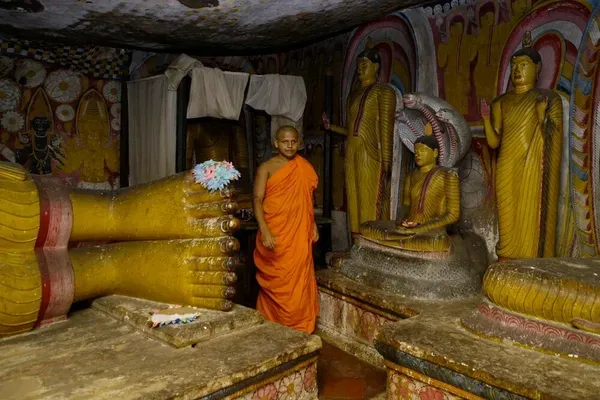
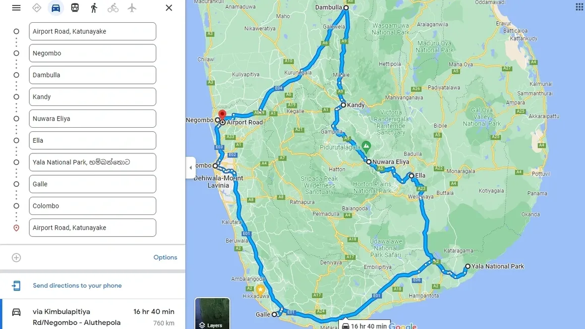

12 Nights / 13 Days
Airport → Negombo → Pinnawala → Dambulla → Sigiriya → Kandy → Peradeniya → Nuwara Eliya → Ella → Yala → Galle → Hikkaduwa → Colombo → Airport
EXPLORE12 NIGHTS / 13 DAYS
Airport – Negombo – Pinnawala – Dambulla – Sigiriya – Kandy – Peradeniya – Nuwara Eliya – Ella – Yala – Galle – Hikkaduwa – Colombo – Airport
Day 01 – Airport – Negombo
On the first day of your visit to wonderful Sri Lanka, you will transferred to Negombo.
Negombo

Negombo Sri Lanka (Sinhala: මීගමුව; Tamil: நீர்கොழும்බු) is a bustling city close to the Bandaranaike International Airport; and second largest city in the Western province, after Colombo. Located at the lagoon-mouth, Negombo is a major tourist destination with an old, large, and thriving fishing industry.
The beach here is quiet and peaceful, and the sight of the fisher folk out at sea on their oruwas (outrigger canoes) is a particularly charming sight. It is not always safe to swim here, but diving enthusiasts can explore the wreck of a World War II British cargo plane in nearby Marawila.
A boat trip winding through the lush mangroves down the Dutch Canal or Muthurajawela Marsh will reward you with sightings of monitor lizards and flocks of migrant birds.
Day 02 – Pinnawala – Dambulla
After breakfast leave for Pinnawala, visit pinnawala elephant orphanage. Afterward leave for Dambulla.
Pinnawala Elephant Orphanage

Pinnawala Elephant Orphanage is an orphanage, nursery, and captive breeding ground for wild Asian elephants located at Pinnawala village, 13 km (8.1 mi) northeast of Kegalle town in Sabaragamuwa Province of Sri Lanka. Pinnawala has the largest herd of captive elephants in the world. In 2011, there were 96 elephants, including 43 males and 68 females from 3 generations, living in Pinnawala.
Dambulla Cave Temple



Dambulla cave temple also known as the Golden Temple of Dambulla is a World Heritage Site (1991) in Sri Lanka, situated in the central part of the country. This site is situated 148 kilometres (92 mi) east of Colombo, 72 kilometres (45 mi) north of Kandy and 43 km (27 mi) north of Matale.
Dambulla is the largest and best-preserved cave temple complex in Sri Lanka. The rock towers 160 m over the surrounding plains. There are more than 80 documented caves in the surrounding area. Major attractions are spread over five caves, which contain statues and paintings. These paintings and statues are related to Gautama Buddha and his life. There are a total of 153 Buddha statues, three statues of Sri Lankan kings and four statues of gods and goddesses. The latter include Vishnu and the Ganesha. The murals cover an area of 2,100 square metres (23,000 sq ft). Depictions on the walls of the caves include the temptation by the demon Mara, and Buddha's first sermon.
Day 03 – Sigiriya
The next day after breakfast, You will visit Sigiriya and climb the Rock Fortress.
Sigiriya Rock Fortress

Sigiriya or Sinhagiri is an ancient rock fortress located in the northern Matale District near the town of Dambulla in the Central Province, Sri Lanka. It is a site of historical and archaeological significance that is dominated by a massive column of rock approximately 180 m (590 ft) high.
According to the ancient Sri Lankan chronicle the Cūḷavaṃsa, this area was a large forest, then after storms and landslides, it became a hill and was selected by King Kashyapa (AD 477–495) for his new capital. He built his palace on top of this rock and decorated its sides with colorful frescoes. On a small plateau about halfway up the side of this rock, he built a gateway in the form of an enormous lion. The capital and the royal palace were abandoned after the king's death. It was used as a Buddhist monastery until the 14th century. Sigiriya today is a UNESCO-listed World Heritage Site. It is one of the best-preserved examples of ancient urban planning.
Day 04 – Dambulla – Kandy
Next day after breakfast, you will visit to Dambulla Cave Temple. After that, you will proceed to Kandy.
Dambulla Cave Temple
Dambulla cave temple also known as the Golden Temple of Dambulla is a World Heritage Site (1991) in Sri Lanka, situated in the central part of the country. This site is situated 148 kilometres (92 mi) east of Colombo, 72 kilometres (45 mi) north of Kandy and 43 km (27 mi) north of Matale.
Dambulla is the largest and best-preserved cave temple complex in Sri Lanka. The rock towers 160 m over the surrounding plains. There are more than 80 documented caves in the surrounding area. Major attractions are spread over five caves, which contain statues and paintings. These paintings and statues are related to Gautama Buddha and his life. There are a total of 153 Buddha statues, three statues of Sri Lankan kings and four statues of gods and goddesses. The latter include Vishnu and the Ganesha. The murals cover an area of 2,100 square metres (23,000 sq ft). Depictions on the walls of the caves include the temptation by the demon Mara, and Buddha's first sermon.
Temple of the Tooth Relic

Kandy is a major city in Sri Lanka located in the Central Province. It was the last capital of the ancient kings' era of Sri Lanka. The city lies in the midst of hills in the Kandy plateau, which crosses an area of tropical plantations, mainly tea. Kandy is both an administrative and religious city and is also the capital of the Central Province. Kandy is the home of the Temple of the Tooth Relic (Sri Dalada Maligawa), one of the most sacred places of worship in the Buddhist world. It was declared a world heritage site by UNESCO in 1988. Historically the local Buddhist rulers resisted Portuguese, Dutch, and British colonial expansion and occupation.
Day 05 – Peradeniya – Nuwara Eliya
The next day after breakfast, you will proceed to Peradeniya Botanical Garden. Later, travel to the cool highlands of Nuwara Eliya.
Peradeniya Botanical Garden

Peradeniya is the most significant botanical garden in Sri Lanka, lying in a spiral of the Mahaweli River. Explore its vast collection of tropical flora and rare orchids.
Day 06 – Nuwara Eliya
The next day after breakfast, commence a city tour of Nuwara Eliya.
Nuwara Eliya City Tour

Nuwara Eliya meaning "city on the plain" or "city of light" is a town in the central highlands of Sri Lanka. It is one of the major tea-producing areas in the world. The tallest mountain in Sri Lanka "Pidurutalagala" oversees this beautiful city. It is the most visited hill country.
Day 07 – Ella
The next day after breakfast, proceed to Ella.
Ella & Nine Arch Bridge

Ella is a small town in the Badulla District of Uva Province, Sri Lanka governed by an Urban Council. It is approximately 200 kilometres east of Colombo and is situated at an elevation of 1,041 metres above sea level. The area has a rich bio-diversity, dense with numerous varieties of flora and fauna.
Day 08 – Yala Safari
Experience an exciting jeep safari in Yala National Park, famous for its high leopard density.
Yala National Park

Yala (යාල) National Park is the most visited and second largest national park in Sri Lanka, bordering the Indian Ocean. The park consists of five blocks, two of which are now open to the public, and also adjoining parks. The blocks have individual names such as Ruhuna National Park (Block 1), and Kumana National Park or 'Yala East' for the adjoining area.
It is situated in the southeast region of the country and lies in Southern Province and Uva Province. The park covers 979 square kilometers (378 sq mi) and is located about 300 kilometers (190 mi) from Colombo.
Day 09 – Galle – Hikkaduwa
The next day after breakfast, proceed Hikkaduwa via Galle.
Galle Fort

Galle is a town situated on the southwestern tip of Sri Lanka, 119 km (74 mi) from Colombo. Galle was known as Gimhathiththa (although Ibn Batuta in the 14th century refers to it as Qali) before the arrival of the Portuguese in the 16th century when it was the main port on the island.
Galle reached the height of its development in the 18th century, before the arrival of the British, who developed the harbor at Colombo. Today, its historic Dutch Fort is a UNESCO World Heritage Site and a major attraction.
Day 10 – 11 – Hikkaduwa
Relax and enjoy two full days of beach life in Hikkaduwa, known for its surf and coral sanctuaries.
Hikkaduwa Seaside Resort

Hikkaduwa is a seaside resort town in southwestern Sri Lanka. It’s known for its strong surf and beaches, including palm-dotted Hikkaduwa Beach, lined with restaurants and bars. The shallow waters opposite Hikkaduwa Beach shelter the Hikkaduwa National Park, which is a coral sanctuary and home to marine turtles and exotic fish.
Inland, Gangarama Maha Vihara is a Buddhist temple decorated with hand-painted murals. Enjoy the vibrant atmosphere and the natural beauty of this coastal gem.
Day 12 – Colombo
The next day after breakfast, proceed Colombo.
Colombo City Tour

Colombo is the executive and judicial capital and largest city of Sri Lanka by population. According to the Brookings Institution, Colombo metropolitan area has a population of 5.6 million, and 752,993 in the Municipality. It is the financial centre of the island and a tourist destination.
Day 13 – Colombo – Airport
Hoping you have enjoyed your trip, you will then be taken to the airport for your upcoming flight.

Map of the whole trip